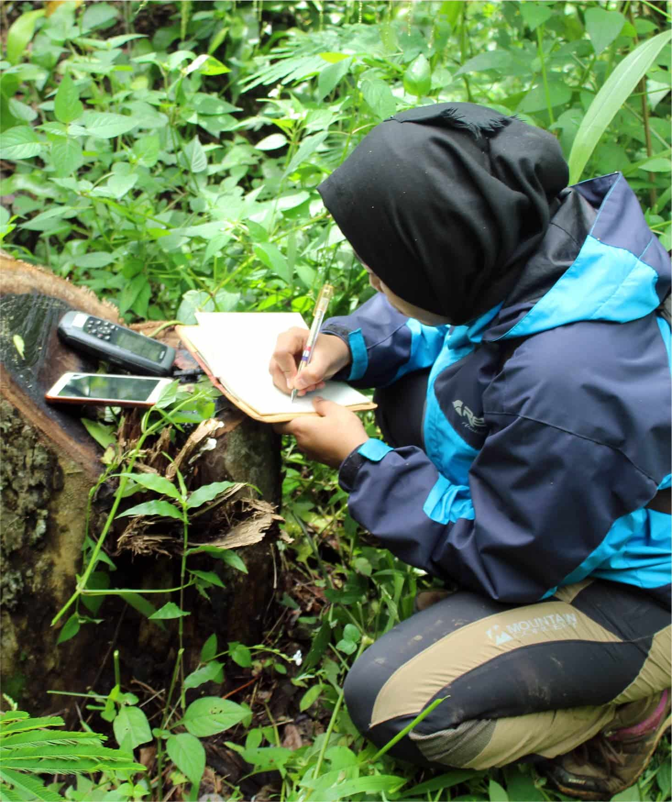

United Nations In Indonesia
Country Results Report 2021
Better Policies for Disaster Risk Reduction

Situated along the Pacific Rim of Fire, Indonesia is one of the world’s most disaster-prone countries. In 2021, some 3,034 disasters impacted 8.3 million people, according to Indonesia’s National Disaster Mitigation Agency. Like COVID-19, disasters set back the 2030 Agenda and exacerbate pre-existing inequalities.
UN interventions throughout 2021 enhanced cross- sector coordination between government and local civil society organizations to prepare for and respond to disasters. That included the establishment of new provincial logistic clusters in Central Java and South Sulawesi. Both were formalized through governor’s’ decrees and adopted operational guidelines in alignment with the Sendai Framework for Disaster Risk Reduction.
The UN also supported existing coordination mechanisms on disaster risk management, including national clusters and the recently established Solidarity and Generosity Movement on COVID-19. For example, the UN serves as the co-lead for the nutrition sub-cluster led by the Ministry of Health. In 2021, that sub-cluster put in place sustainable systems to support nutrition emergency preparedness and response capabilities, including the development of training curricula and online learning materials on nutrition in emergencies, as well as nutrition emergency contingency plans at the provincial level. The UN continued to lead on risk communications and community engagement on nutrition during the COVID-19 pandemic, including developing a contingency plan for child protection in emergencies, which advocated for the inclusion of refugees in national policies and programmes.
UN technical assistance also enhanced the National Logistics Cluster’s ability to support the Government in responding to the increase in COVID-19 cases in 2021. For example, the UN formed an Oxygen Task Force to coordinate the response to oxygen scarcity-related issues.
Floods accounted for more than one-third of disasters in Indonesia in 2021, and the UN is working at all levels to build greater community resilience to floods. In targeted areas of Makassar city, and flood- affected Bogor and Luwu Utara, for example, the UN helped enhance the capacity of 224 government and community responders to accelerate the COVID-19 response. Following an earthquake in West Sulawesi and flooding in South Kalimantan, two pre-existing provincial logistics clusters were activated, leading to the timely distribution of relief items. Following Cyclone Seroja and the Ile Lewotolok volcano eruption in East Nusa Tenggara, the UN assisted in the establishment of a provincial displacement and protection cluster. Furthermore, the UN assisted the Ministry of Social Affairs in finalizing the national guidelines on cash and voucher assistance for disaster-affected people, in line with the Sendai Framework.
While floods, earthquakes, and volcanic eruptions grab headlines, the impacts of air pollution can be more insidious. In 2021 the UN helped the Ministry of Health finalize a national roadmap on indoor air quality. This included the development of a tool for assessing the determinants of indoor air quality at the community level and developing a strategy for behavioural change to improve indoor air quality and promote healthy housing. Through this intervention, Indonesia has committed to improving human resource capacities and systems in managing indoor air quality in residential areas, workplaces, and recreation areas, as well as public places including healthcare facilities by the year 2029.
Disasters, including COVID-19, worsen inequalities in part because they interrupt service delivery for vulnerable populations. In collaboration with the Ministry of Health, the Ministry of Women’s Empowerment and Child Protection, and the National Family Planning Agency, the UN developed national standards and procedures to ensure that sexual reproductive health services, contraceptive services, and the prevention and management of Gender-Based Violence continue during COVID-19 and other health crises. This includes working with the National Family Planning Coordination Board to ensure the application of guidelines for family planning at hospitals across all provinces and districts. The UN also developed new technical guidelines on contraceptive services during disasters and health crises, which will be piloted in five districts in 2022. In 2021, some 1,303 health practitioners and government officials participated in capacity building seminars on how to ensure the availability of contraceptives during crises including the COVID-19 pandemic
The UN also built on ongoing work to develop the evidence base that informs policymaking on DRR by mapping how gender and age affect vulnerability to disasters and consolidating data from region-wide studies with Indonesia-specific case studies. In 2021, some US$4 million was mobilized to be deployed between 2023 and 2025 towards women’s resilience along the humanitarian-development-peace nexus and enhancing the government’s capacity to implement gender-responsive DRR policies and programmes.